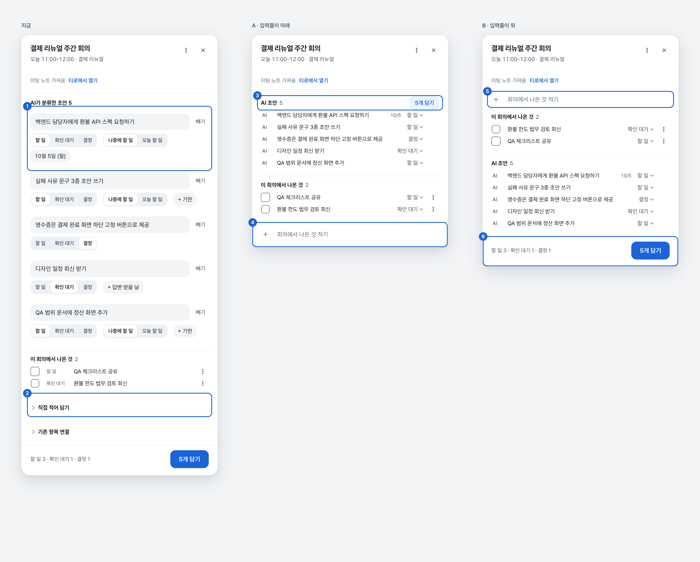
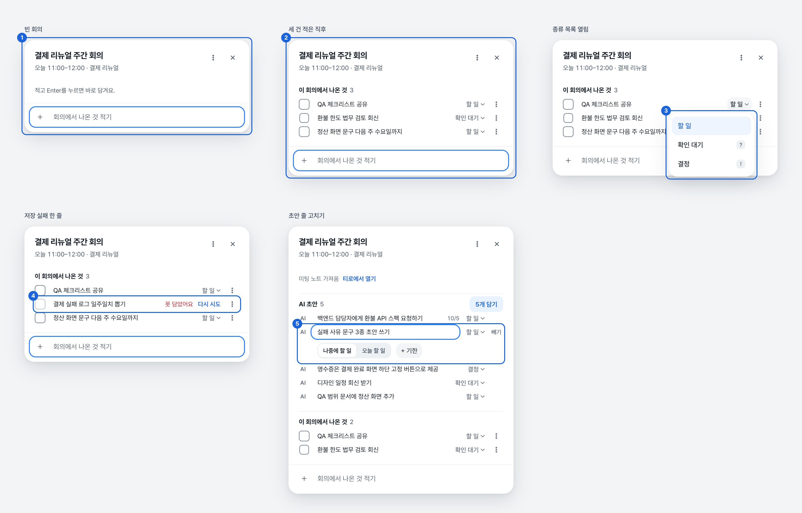
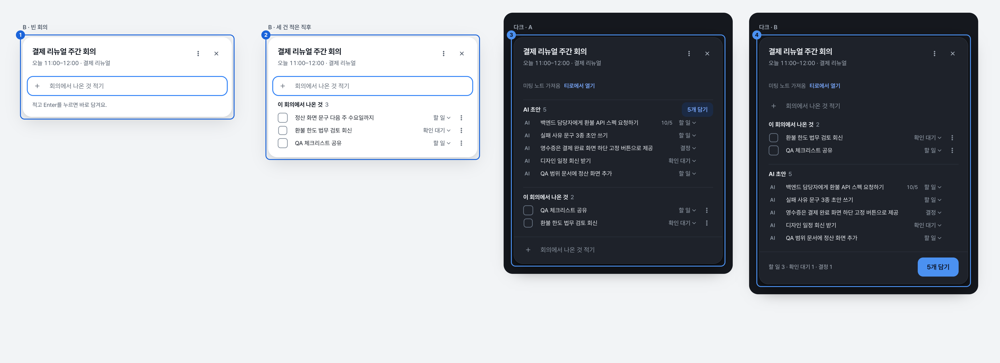
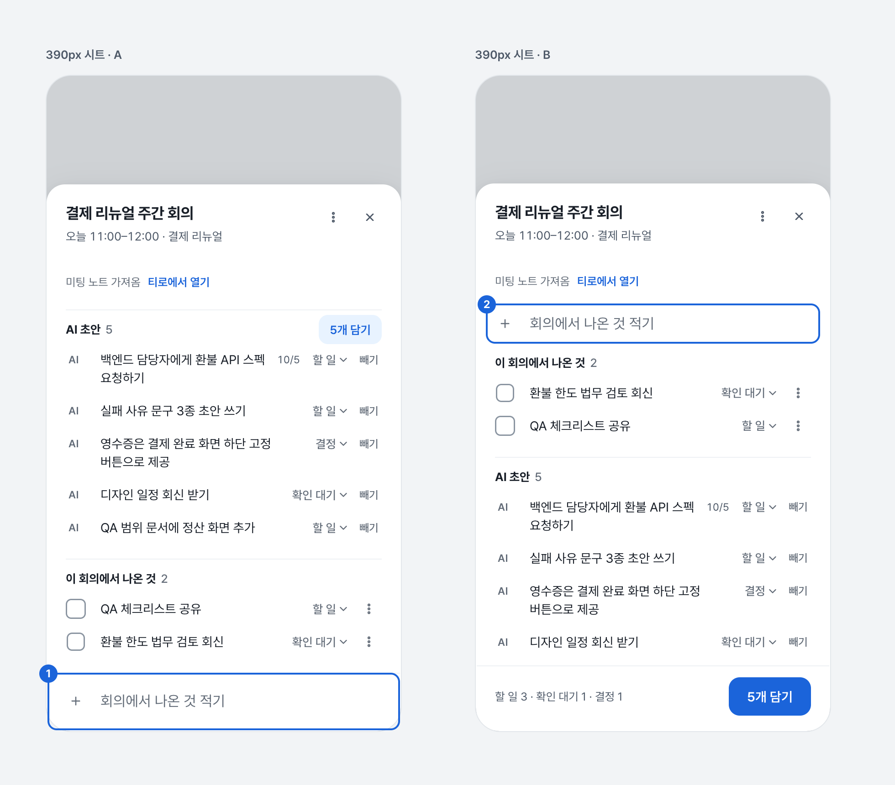

회의 정리 카드(회의 탭 오른쪽 자리 · 줄 옆 460px 카드) 안의 입력 자리. 가짜 데이터, 앱 토큰만 사용. 2026-10-02
할 일 ⌄을 눌러 보기. 일정 정하기 판과 같은 값(.88 → 1.025 → 1)인데 판이 작아서 220ms로 조금 줄였음. 과하면 "느리게 ×5"로 확인.입력줄을 누르고 적은 뒤 Enter — 연달아 적어 보기. 앞에 ?를 붙이면 확인 대기, !는 결정. 글에 실패가 들어가면 저장 실패를 흉내 냄. 줄의 할 일 ⌄, 초안 문구를 눌러 보기.
입력줄이 카드 발에 붙박이고, 적은 것은 바로 위에 시간순으로 쌓임. 카드가 길어져도 입력줄과 방금 적은 줄이 늘 보임. 눈과 손이 한 자리에 머묾.
약점 — 발 자리를 입력줄이 쓰므로 N개 담기가 발에서 AI 초안 제목 옆(2차 버튼)으로 옮겨 감. 앱의 다른 빠른 추가(목록 맨 위, 새 줄이 위)와 방향이 반대. 520px 이하 시트는 "발도 본문과 같이 스크롤"인데 입력줄만은 붙박아야 함.
오늘 탭 빠른 추가와 같은 자리·같은 방향(새 줄이 맨 위). 발의 담기 바(할 일 3 · … | 5개 담기)는 지금 그대로라 바뀌는 규칙이 가장 적음.
약점 — 카드를 아래로 스크롤하면 입력줄이 사라짐. 적을 때마다 아래 내용(초안 5개)이 한 줄씩 밀려 내려가 화면이 더 많이 움직임. 5건 넘게 적으면 초안이 화면 밖으로 밀림.

5개 담기는 제목 옆
다시 시도. 적은 글은 그대로

빼기는 늘 보임담기를 기다리지 않음. 사람이 직접 적은 글은 검토할 것이 없고, 지금도 한 건씩 바로 담김(/api/workflow/capture). 잘못 적었으면 ⌘Z나 줄의 ⋯ → 삭제.AI 글자가 서고(아직 내 항목이 아님), 담으면 체크박스가 생김.할 일. 바꾸는 길은 둘 — 적은 뒤 줄의 할 일 ⌄, 또는 적을 때 맨 앞 한 글자: ? 확인 대기, ! 결정. 앞머리는 담을 때 떼어 냄. 종류 목록의 글쇠가 같은 글자라 따로 설명문이 없어도 배울 수 있음.
?나 !로 시작하는 글은 못 적음. Tab으로 종류를 돌리는 안은 자판으로 화면을 옮겨 다니는 길을 막아서 버렸음.오늘 할 일을 고르면 접힌 줄에 오늘이 조용히 붙음.- • 1. 같은 목록 표시는 떼어 냄. 빈 줄은 건너뜀.| 움직임 | 세기 | 값 | 속성 |
|---|---|---|---|
| Enter로 새 줄 | 1 (매번) | 140ms · --ease · 6px 이동 + 투명도 · 넘침 없음 | transform, opacity |
| 새 줄에 밀리는 이웃 줄 | 1 | 140ms · --ease · 자리 차이만큼 이동(넘침 없음). 연달아 치면 새 값으로 이어 감 | transform |
| 종류 목록 등장 | 3 (쫀득) | 220ms · scale .88 → 1.025(55%) → 1 · 시작점은 누른 글자 | transform, opacity |
| 종류 목록 항목 | 3 | 160ms · 18ms 간격(첫 항목 30ms 뒤) · 4px 이동 + 투명도 | transform, opacity |
| 종류 목록 닫힘 | — | 120ms · scale .96 + 투명도 | transform, opacity |
| 초안 줄 펼침(고치는 칸) | 2~3 | 220ms · scaleY .94 → 1.012(60%) → 1, 위에서 · 아래 줄은 같은 220ms로 밀리며 1.5px 넘침 | transform, opacity |
| 초안 줄 접힘 | — | 130ms · 넘침 없음 | transform |
| 종류 글자·버튼 누름 | 1 | scale .97~.98 · 120ms | transform |
| 움직임 줄이기 | — | 전부 즉시(위 "끄기"와 같음) | — |
높이는 움직이지 않음 — 줄이 생기거나 펼쳐질 때 자리는 바로 바뀌고, 이웃 줄이 옛 자리에서 새 자리로 미끄러져 오는 것만 보임. 일정 정하기 판(240ms)보다 20ms 짧은 것은 판이 세 줄뿐이라서.
N개 담기". A는 발을 입력줄이 쓰고 담기는 AI 초안 제목 옆 2차 버튼. B는 그대로.빼기가 회색 글자 버튼이라는 결정(DECISIONS 16행)은 지킴.이 회의에서 나온 것은 종류 소제목으로 나눈다". 방금 적은 줄이 종류 묶음 속으로 튀어 들어가면 리듬이 깨져서, 시안은 시간순 한 목록 + 줄마다 종류 글자. 소제목을 살리려면 "방금 적은 것만 시간순, 다시 열면 소제목 속으로"가 대안.